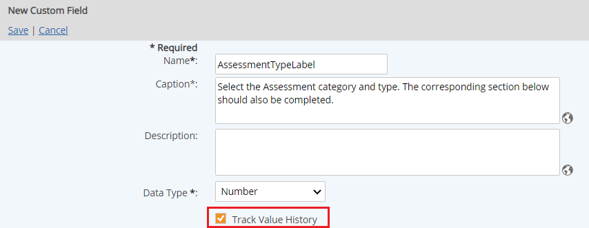

When you choose to Track Value History for a field, the changes to the field value at different time periods can be retained for future reference.
A field may be needed to store a permit number for a facility. When the permit is renewed the permit number changes. However, the previous number needs to be retained for reference. You can preserve this information by selecting to track the value history. When the permit number changes, you can then create a new value history for the field
The Track Value History option is available for most fields, with the exception of hyperlink fields, unique tags and label fields. For Calculated Numeric Fields, the value history is tracked on the template, where the calculation formula is defined.
By default the Track Value History option is not checked off. This function should only be used when necessary. If applied unnecessarily to fields that are widely used across the system this may create performance impacts. After values are applied to fields with this option enabled the settings cannot be undone. Instead you will have to recreate the fields.
To track the value history for a field:
Select the Track Value History checkbox in the Create/Edit Custom Field form.

After the field has been added to a Custom Field Template and applied to an object, enter and edit the values from the Edit Properties form for the object.
To assign a value to the tracked field:
Select Update to save the value.
When you need to change the value for the field, you can do so from the Edit Properties form again.
To change the value for a tracked field:
On the Edit Properties form, click the plus sign (+) to expand the Value History.
The history of values for the field is shown. You must first assign an end date for the current value before you can create the new value.
Select Update to save the value.